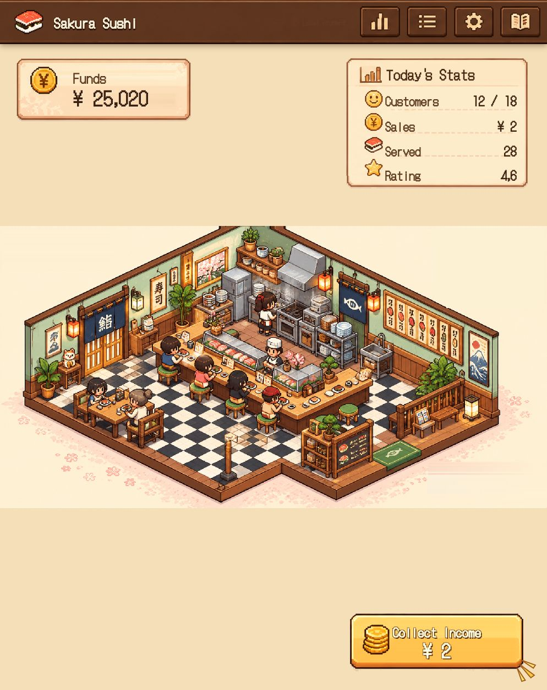

Sushi audit: independent verification
27 October 2026 · Local checkout 5ee6972833e931ec7b23f7588026cfa621b6c914
The report identifies real presentation regressions. Its strongest evidence concerns
misleading money displays, hidden production information, and artwork that does not reflect
ownership. Its balance and educational conclusions mix documented design choices with defects.
Scope: compared the original report against current
source, the introducing Git diff, the product brief, the
GDD, and the balance model.
Reproduced the empty-register bug in the local browser and exercised actual render,
collection, and purchase code with a frozen clock. No game implementation, economy values, or
original report were changed.
Findings and corrections
| Report claim |
Verdict |
Evidence and practical meaning |
| Empty register shows ¥6,280 |
Confirmed · high priority |
sushi-view.ts:744 substitutes 6280 when displayed income is zero. After
collection, the visible disabled button and Sales plaque show ¥6,280 while the
accessible label correctly says zero. A seven-yen fixture renders seven correctly.
Domain collection transfers seven yen once and leaves zero pending; this is a display
defect, not evidence of duplicated money.
|
| Production information is hidden |
Confirmed · high priority |
sushi-view.ts:802,863,871 apply sr-only to rate, register
amount, and cap/progress/warning/explanation containers.
sushi.css:1553 clips them to a 1px box. The full-register warning still
renders for a capped fixture but is inside the clipped container. Correction: positive
uncollected amounts remain visible on the collect button; the report's claim that the
player can never see pending yen is too broad.
|
| Scene depicts unowned equipment and decorations |
Confirmed · high priority |
restaurant-scene.ts:100–117 renders four transparent sprite references and
an unconditional full-room PNG. The browser shows the furnished room while the
accessible description says basic kitchen/no conveyor. Conditional SVG overlays exist
but cannot remove objects baked into the image. This conflicts with visible
purchase/placement progression. Exact guest counts and claims that every decoration is
present were not independently established.
|
| Statistics and calendar are synthetic |
Confirmed |
sushi-view.ts:743–746 derives Customers and Served from capacity, and
Rating from inventory size; these are not daily activity measurements. Sales is pending
income, not daily sales, even when nonzero. Day 12 / Spring 1 / 12:30 are static at
lines 1539–1546. Presenting these as current statistics is misleading.
|
| Chapter 8 and 10 upgrades are dead |
Immediate rate deltas confirmed; conclusion overstated |
Real chronological purchases yield 10 → 20 → 20 → 20 → 40 → 40 → 60 → 90 ¥/min
(including the starting rate). Knife and service counter have zero immediate rate delta,
but later complementary purchases use their capacity.
sushigame.md §5.2 explicitly permits this; the balance model §4
specifically describes both plateaus as intentional. The shop still generates bottleneck
warnings at sushi-view.ts:1163. Changing them to revenue upgrades is a
redesign, not a required correctness fix.
|
| Seven recipes cost ¥11,400 with no income effect |
Confirmed; cosmetic role is intentional |
All seven purchases leave kitchen, service, and revenue-per-order unchanged. The brief
§5.6 explicitly defines the original salmon recipe as visual menu variation only, and
the expanded design documents describe recipe variants. Their visual reward is weakened
by the scene regression. Adding +1 ¥/order or quizzes would change the design and
balance.
|
| The entire game is exhausted in 2–4 days |
Not established |
The catalog totals are correct: ¥48,000 = ¥31,500 functional + ¥11,400 recipes + ¥5,100
decoration. At a constant 40–90 ¥/min, ¥48,000 represents 20–8.9 production hours; that
arithmetic is not a completion-time model. Rates must first be unlocked and purchased,
collection caps can stop income, and purchases remain medal-gated. Cash may outpace
weekly unlocks, but the asserted semester timeline needs a study/collection schedule. No
explicit gameplay wallet maximum was found.
|
| Icons and languages are inconsistent |
Confirmed |
The chart icon calls the theme toggle; the gear opens the shop
(sushi-view.ts:1590–1654). English visible HUD text mixes with Swedish
dialogs and accessible labels. The heading's lang="ja" also covers Swedish
hidden text, making the language annotation inappropriate for the full heading.
|
| No educational value without in-game Japanese quizzes |
Product opinion, not a demonstrated defect |
The documented learning loop is study → medal → restaurant unlock. The game need not
duplicate exercises to fulfill that purpose. Vocabulary and restaurant phrases could
improve it, but constitute new product work. Decorative Japanese lettering also appears
in the artwork, so “no Japanese” is too absolute.
|
| Dead activeRecipe and revenue category workaround |
Confirmed, low priority |
activeRecipe is declared and initialized but has no gameplay consumer in
src or functions/src. Manual recipe selection was deferred by
the brief. Revenue items are deliberately included in the kitchen filter at
sushi-view.ts:1110; this is a grouping decision, not proof of a broken
purchase path.
|
| Viewport lock breaks mobile scrolling |
Lock confirmed; blanket failure unproven |
sushi.css:65–74 disables page scrolling, but modal content has its own
overflow-y:auto at line 1169. This investigation did not run a
mobile/zoom/keyboard reachability matrix. Fixed viewport CSS alone does not establish
that controls are inaccessible.
|
| Local/production synchronization differs |
Confirmed architectural boundary |
service.ts:60–75 selects localStorage on localhost unless explicitly using
emulators. functions/src/index.ts:67–75 derives grants from stored course
progress in a server transaction. The report correctly recognizes that ignoring
client-supplied grants is intended. Local checks cannot establish production
synchronization correctness.
|
Origin and test gap
The diff for 5ee6972 introduces the ¥6,280 fallback, synthetic statistics, hidden
production containers, static date/time, icon mappings, and raster scene. Its message
explicitly mentions retaining screen-reader telemetry and test contracts. The code supports a
regression caused by matching the illustration; it does not establish malicious intent.
The ¥18,740 wallet and ¥6,280 pending-income seed is restricted to the localhost service, the
local-dev-user account, and an empty balance/register/inventory
(service.ts:114–131). Default restaurant state remains zero/zero. The visible
fallback, unlike that seed, applies to every authenticated game view.
The selected existing view, economy, purchase, and scene suites pass 87/87.
Their template/string/marker checks do not prove that data is visible or that removing a
decoration removes its pixels. The new diagnostic produces
four failing UI checks out of five, with the nonzero amount serving as a
passing control. This is evidence of a coverage gap, not a claim that all repository tests
pass.
Reproduction and validation
The diagnostic harness uses only an isolated in-memory
repository and a frozen clock. It was run twice with identical observations. It performs real
collection/purchases and renders the actual lit templates; CSS clipping is corroborated by
source and the browser screenshot. It is intentionally outside the normal test suite.
node docs/sushi-game/audit-investigation.mjs --assert-ui
Empty register: FAIL — visible ¥ 6,280
Nonempty seven-yen register: PASS — visible ¥ 7
After collection: FAIL — visible ¥ 6,280; stored pending income is zero
Visible rate container: FAIL — sr-only
Visible cap/warning container: FAIL — sr-only
AssertionError: UI regressions reproduced (4 !== 0)
Omit --assert-ui for an informational run.
Full reproduction output.
# PowerShell: focused existing suite
$env:NODE_ENV='test'
node --test tests/sushi-view.test.ts tests/sushi-economy.test.ts tests/sushi-purchase.test.ts tests/sushi-scene-adversarial-challenge.test.ts
# 87 tests, 87 pass, 0 fail
The initial direct Node invocation lacked the test environment flag and produced two
entry-availability failures; setting the flag expected by those tests resolved them.
Final suite output. Production
Firebase/emulator integration and a full responsive matrix were not run.

Browser evidence after collection: accessible label says zero; visible button and Sales say
¥6,280. The preview account has no purchased equipment.
Recommended repair order
-
Make the money display truthful at zero and positive balances; replace or remove unsupported
daily statistics and static clock/calendar.
-
Restore visible rate, cap, progress, full-register warning, and bottleneck guidance with a
responsive layout. Removing
sr-only alone needs layout verification.
-
Make purchased/placed objects actual removable layers. Assess the prior vector scene as a
recovery option; a blanket commit revert would also undo unrelated presentation work.
-
Correct icon actions and language consistency. Add rendered-browser coverage for
zero/nonzero money, cap visibility, and visual ownership/placement differences.
-
Evaluate economy pacing separately using an explicit medal-unlock and collection schedule.
Preserve current intended bottleneck and cosmetic behavior until a design change is chosen.